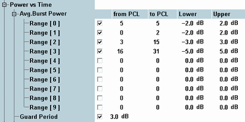
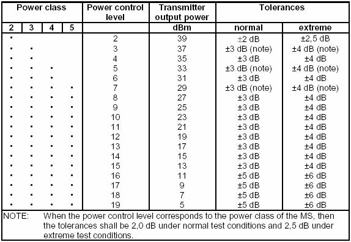
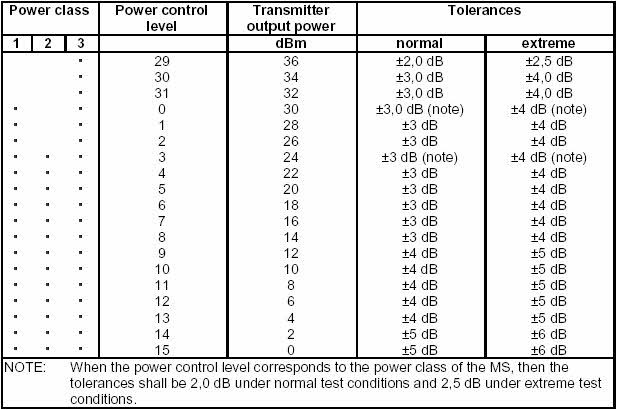
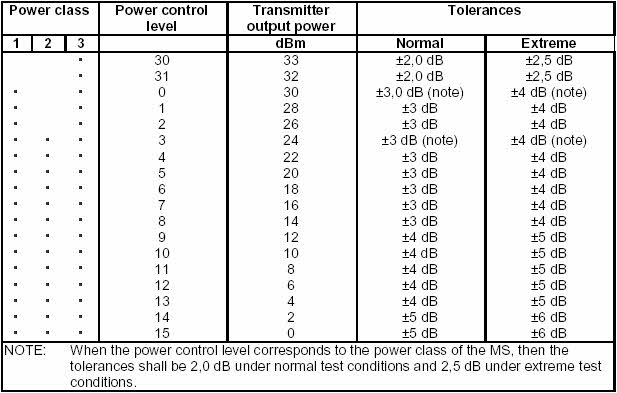

Dynamic power control is essential to ensure stable transmission and an efficient radio resource management within the system. Generally speaking, an output power of the mobile transmitter that is too low decreases the coverage area while an excess output power can cause interference to other channels or systems. Both effects decrease the system capacity.
GSM mobile phones are divided into different power classes according to their maximum output power.
Power class | Nominal maximum output power in dBm | ||
|---|---|---|---|
GSM 400 GSM GT800 GSM 850 GSM 900 | GSM 1800 | GSM 1900 | |
1 2 3 4 5 | – 39 37 33 29 | 30 24 36 – – | 30 24 33 – – |
The actual transmitter output power is controlled using the dimensionless power control level (PCL) scale.
PCL | Nominal maximum output power in dBm | ||
|---|---|---|---|
GSM 400 GSM GT800 GSM 850 GSM 900 | GSM 1800 | GSM 1900 | |
0 1 2 3 4 5 6 7 8 9 10 11 12 13 14 15 16 17 18 19 to 28 29 30 31 | 39 39 39 37 35 33 31 29 27 25 23 21 19 17 15 13 11 9 7 5 5 5 5 | 30 28 26 24 22 20 18 16 14 12 10 8 6 4 2 0 0 0 0 0 36 34 32 | 30 28 26 24 22 20 18 16 14 12 10 8 6 4 2 0 0 0 0 0 0 33 32 |
According to the GSM standard, the tolerances for the average burst powers, measured at various frequencies, depend on the GSM band and PCL; see tables below. The tolerances are applicable for both normal and access bursts.
The limits can be set in the configuration dialog (for reference information refer to "Avg. Burst Power").

The tables below list the test requirements of specification 3GPP TS 51.010-1, section 13.3. The following tolerances apply to GSM 400, GSMGT800, GSM 800 and GSM900 networks:

The following tolerances apply to GSM 1800 networks:

The following tolerances apply to GSM 1900 networks:

In multislots operation, a reduction of the maximum transmitter output power is allowed; see specification 3GPP TS 51.010-1, sections 13.7 and 13.16.2. Moreover, during the guard periods between any two active timeslots, the power must not be larger than 3 dB above the nominal burst power (dBc value); see also multislot "Power Templates".